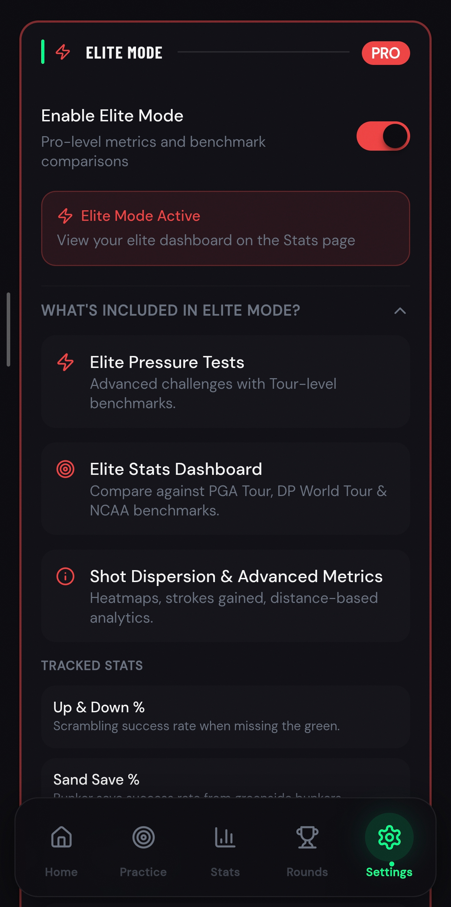
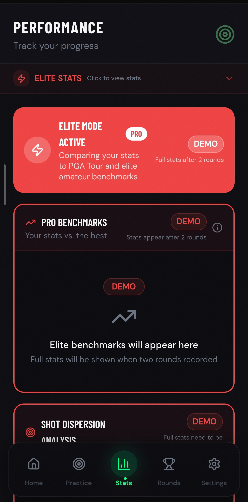
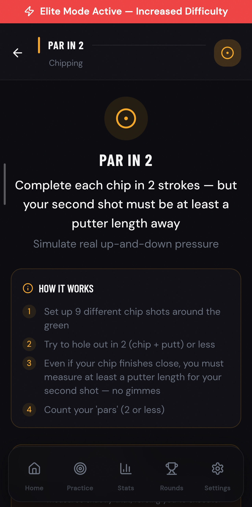

The golf performance analytics app that gives you tour-level metrics, strokes gained data, and the benchmarks the pros use — built for golfers who want to know exactly where they stand.
Elite Mode unlocks advanced golf stats tracking — so you stop guessing where your strokes are going and start training with the kind of precision that actually moves the needle.

Standard stats tell you what happened. Strokes gained tells you why. Most golfers know their handicap, their GIR percentage, their putts per round — but none of that tells you whether your wedge game is costing you two shots a round or half a shot. Without golf data-driven improvement, you're training on feel and hoping for the best.
If you've ever wanted to know how to track strokes gained in golf but didn't have the tools to do it automatically — Elite Mode is built for exactly that. One toggle. Instant access to the metrics that separate improving golfers from plateauing ones.
Activate Elite Mode. See your tour benchmarks. Train with precision.
One toggle unlocks the full analytics layer — strokes gained tracking, pro-level metrics, tour benchmarks, and harder challenge tiers. No setup required.
Every drill and every round is automatically scored against tour-level golf benchmarks — so you can see not just how you performed, but how that performance compares to what a scratch golfer or tour pro would shoot.
Advanced golf stats tracking shows exactly which parts of your game are costing you strokes — and by how much. Your next practice session isn't a guess. It's a targeted response to your data.
The golf strokes gained app that calculates exactly how many shots each part of your game costs or saves you — tee to green, approach, short game, and putting — broken down per round and tracked over time.
Every metric in Elite Mode is measured against tour averages and scratch-level standards. See precisely where your game is tour-competitive and where it's leaking shots — area by area.
Golf pro level metrics including proximity to the hole from different distances, scrambling percentage, sand save rate, strokes gained per category, and scoring average by hole type — the same data points tour caddies use to build a game plan.
Golf performance benchmarks tracked over weeks and months — not just a snapshot from your last round. See how your strokes gained in each category is trending, and whether your practice is actually moving the numbers.
Your handicap index updated automatically alongside your strokes gained data — so you can see the correlation between where you're improving and where your index is dropping. The most honest picture of your progress available.
Compare your golf stats to tour pros across every category. Not to discourage — to show you exactly how close you already are in some areas, and exactly how much ground there is to make up in others.

Elite Mode unlocks a tier of challenges that standard practice can't prepare you for.
Advanced scored assessments with tour-level target zones, tighter proximity requirements, and consecutive make standards that push your short game to its ceiling.
Drills designed specifically to target the strokes gained categories where you're leaking shots — wedge play, lag putting, scrambling — so practice time is always pointed at maximum impact.
Advanced proximity challenges that measure how close you're leaving the ball from 20, 40, 60, and 80 yards — compared directly to PGA Tour proximity averages from the same distances.
Elite-tier scoring challenges designed for players targeting scratch or below. Every test raises the standard — because at this level, the difference between good and elite is measured in fractions of a shot.
Not just for pros — see where your game sits against tour benchmarks and know exactly what to work on first.
Elite Mode gives mid-handicappers the same analytical clarity that low handicaps and professionals use — showing you which areas of your game are closest to tour level and which need the most work.
Advanced golf stats tracking identifies the specific strokes gained categories holding your handicap back. Stop training broadly. Start training where it counts.
Full strokes gained breakdown, proximity data, comparative tour benchmarks, and elite-tier challenges. For golfers using an elite golf training app to squeeze every last fraction out of their game.
Every session in Elite Mode has a benchmark worth chasing — not just a personal best, but a tour standard.

The difference between a 10-handicap and a scratch golfer isn't just technique — it's knowledge. Scratch golfers and low handicaps know their game at a granular level. They know they lose shots from 50 yards. They know their lag putting is costing them a stroke a round. They know their sand save rate is below where it needs to be. That knowledge is what directs their practice. Without it, even the most dedicated golfer is training on assumption.
Golf data-driven improvement changes that entirely. When you can see your strokes gained across every category, compare your short game statistics to tour averages, and track your performance benchmarks over time, every practice decision becomes informed rather than instinctive. That's the advantage Elite Mode provides — not just harder challenges, but a level of analytical clarity that makes every session count for twice as much.
Keep Improving
Elite Mode tells you your short game is leaking shots. Scoring Zone's chipping drills are how you fix it.
FeatureStrokes gained putting data shows exactly where the putts are going. Structured putting practice is how you get them back.
FeatureLet your Elite Mode analytics automatically build your next practice session — targeted at the strokes gained categories where improvement will have the highest impact.
FeatureElite Mode sits on top of your round stats data. The more rounds you log, the more accurate your strokes gained picture becomes.
FeatureUse Elite Mode benchmarks to know which SIM Lab challenges to target — and measure your proximity and strike data against tour standards in every session.
Join golfers already using Scoring Zone as their advanced golf practice app — tracking strokes gained, chasing tour benchmarks, and turning data into lower scores.
Unlock Elite Mode Free